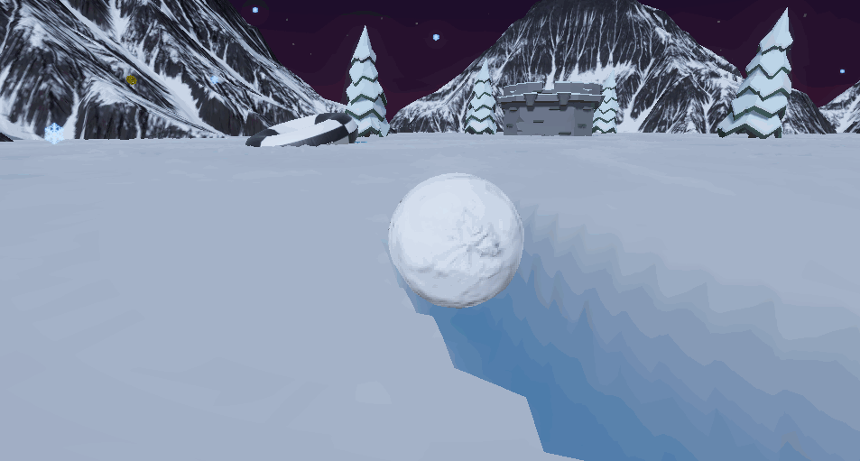

Weston Lane
Computer Programmer | Computer Graphics


Welcome! This is the place to be to learn all about me (Weston Lane). I am a current Computer Science major at Rutgers University-New Brunswick. My interest lies in the intersection between art, physics, and technology. More specifically, computer graphics and it's applications in entertainment and simulation.
In my free time I like to create game projects with a focus on graphical technologies.
 I like to explore as low down the abstraction layers as I can to find out why and how things work.
I like to explore as low down the abstraction layers as I can to find out why and how things work. 
However, I am also interested in many other aspects of software engineering! And enjoy the problem solving challenges this field provides.